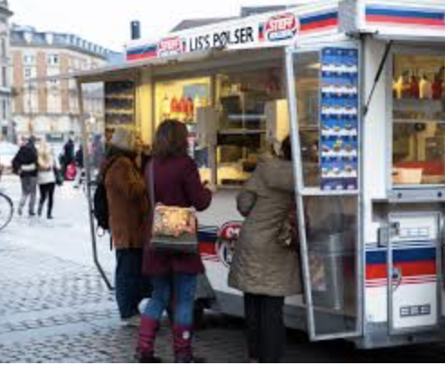
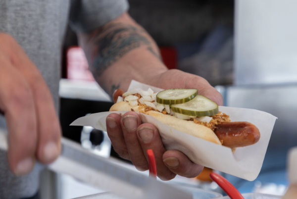

Our danish food
In Denamrk we have som dishes whish we'll never get tired of. Starting with the 'flæskesteg' for the meat lovers, Danish blue cheese for vegeterians and delicious 'smørrebrød' for everyone.
The most traditional food you can find in Denmark is the “smørrebrød”, it is a open-faced sandwich. The danish bread is quite different from other countries, it is called, “rugbrød”. It is more healthy than normal bread, it has a lot of seeds and fiber, and it looks quite different because it is brown-black.
Here is a succulent plate of smørbrød.

Denmark's most famous street food, is hot-dogs. You can buy them everywhere in a “pølsevogn”, aka hotdog wagon. It is very cheap and easy to get on the go.
 